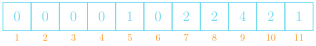
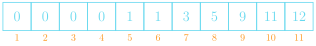

Jed Rembold and Eric Roberts
Week of October 30th
def correct_red_eye(image):
"""Creates a new GImage that reduces the red-eye effect."""
array = image.get_pixel_array()
height = len(array)
width = len(array[0])
for r in range(height):
for c in range(width):
pixel = array[r][c]
rr = GImage.get_red(pixel)
gg = GImage.get_green(pixel)
bb = GImage.get_blue(pixel)
if rr >= 2 * max(gg, bb):
rr = max(gg, bb)
array[r][c] = GImage.create_rgb_pixel(rr, gg, bb)
return GImage(array)def create_cumulative_histogram(hist)
that takes a histogram array hist and
returns a new array in which each value in an index represents the sum
of all values in hist up to and including
that index.create_histogram_array to create a histogram
array to feed into
create_cumulative_histogram.As an example, suppose that you have executed the following lines:
SCORES = [ 8, 7, 8, 6, 8, 10, 4, 9, 6, 9, 7, 8 ]
histogram_array = create_histogram_array(11, SCORES)using create_histogram_array as you
implemented it for PS5 to create the following histogram array:

The corresponding cumulative histogram should look then like:

def create_cumulative_histogram(hist):
"""
Returns the cumulative histogram corresponding to the histogram
array hist. Index k in the cumulative histogram indicates the
number of values less than or equal to k in the original
sample.
"""
chist = [ 0 for i in range(len(hist)) ]
total = 0
for i in range(len(hist)):
total += hist[i]
chist[i] = total
return chist# Implementation notes: create_cumulative_histogram
# -------------------------------------------------
# This implementation of create_cumulative_histogram uses the Python
# features of list comprehension, slicing, and the library sum function
# to reduce the code to a single line. Each element in the comprehension
# is the sum of all the elements at or below that index. This version
# performs many more additions than the expanded version because the
# sum is recomputed each time.
def create_cumulative_histogram(hist):
"""
Returns the cumulative histogram corresponding to the histogram
array hist. Index k in the cumulative histogram indicates the
number of values less than or equal to k in the original sample.
"""
return [ sum(hist[:i + 1]) for i in range(len(hist)) ]